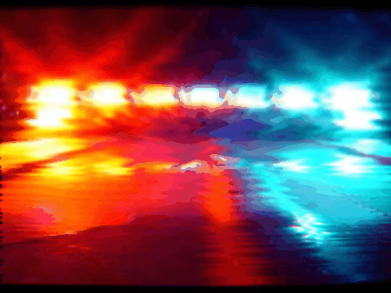
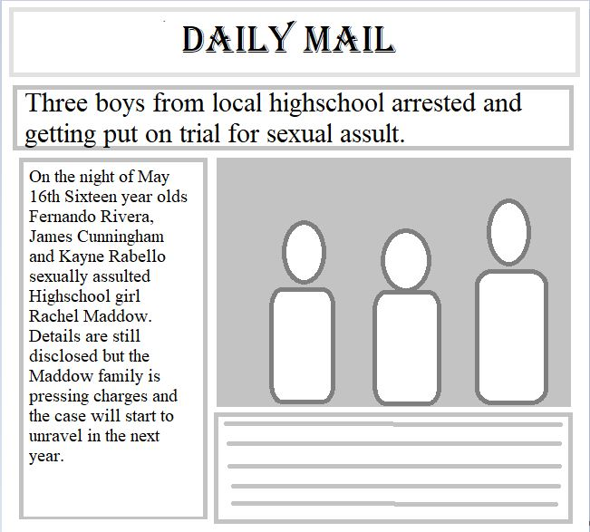
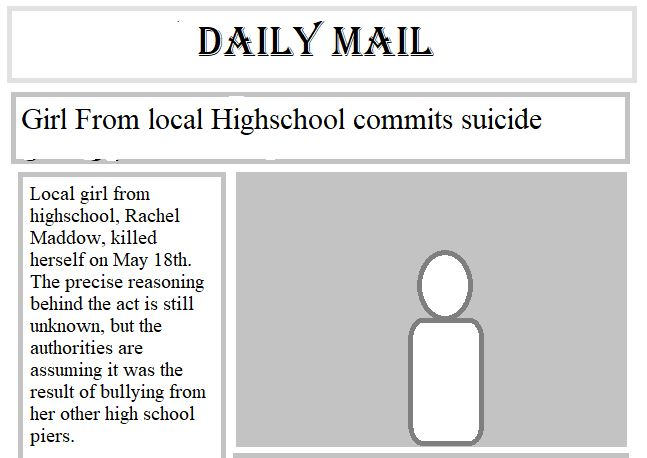
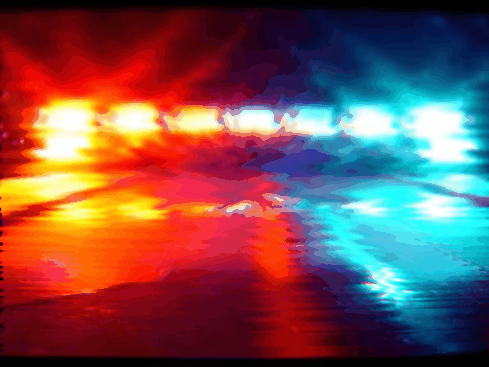
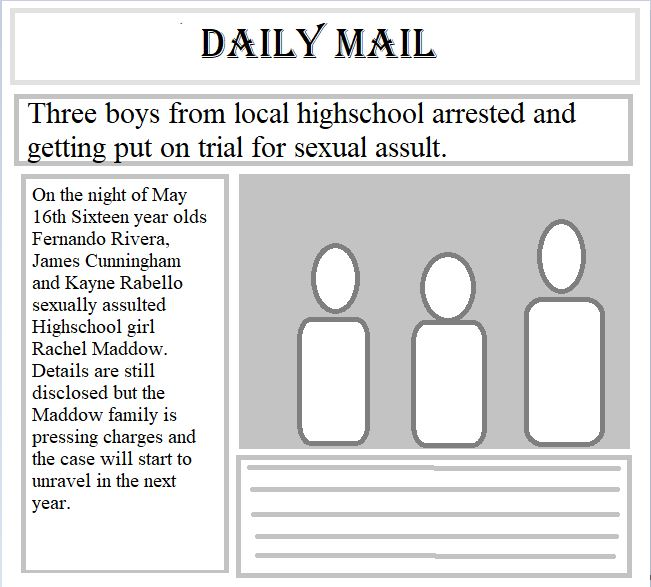
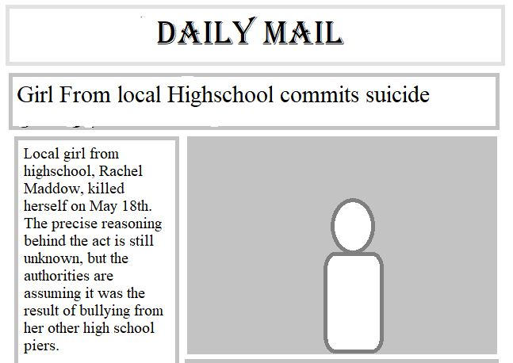

For my final piece the motivation I found to make an expansion on my net art work is my passion for choiced based stories were the player is in control of the outcome. The inspiration that games like The Witcher 3: Wild hunt, The Walking Dead telltale series or Until Dawn have given me helped my creative process for balancing the options I give the player. For the setting of the game I chose high school because It’s a very defining time in everybody's life. My objective was to let the choices in the game maybe remind them of experiences they had in high school. As for the images t the end of every storyline I decided to glitch a most of them to express that no matter what the ending is things aren’t always the way they seem in life and they’re often distorted and riddled with imperfections.
Originally the project was all played through a series of links and html pages, however that system is very inefficient when it comes to visualizing the storytelling and the different choices. I decided to move to a program called Twine. This program allowed me to not only speed up the process of creating new units within the story but also with the visualization of the different arcs and branches of it. Learning it was pretty simple, due to the lack of technically advanced features I planned to have for my story. Given more time I would’ve wanted to add more imagery for the story as well as the individual characters. Originally the project was gonna end of the death of your character but I realized halfway through the multitude of options that it would have created would’ve been too much. Another thing that I wanted to put more into was the story telling but I realized that the paragraphs of detailed text became to boring to play through without any imagery to entertain the player so I decided to keep the choices more short and sweet. For the images I found myself running into a time constraint there too. I wanted the structure and purpose of the story to be solid before working on the imagery, and due to the delays with the storytelling I wasn’t left with much time for the imagery. So I limited the images to just the story endings. For some of the endings I thought it would be more fitting to end on a newspaper article from a local newspaper, and to create those I used the windows program paint with some fancy fonts and a kind of minimalistic newspaper design created from scratch. As for the glitched images windows 10 makes the process very confusing and long so I decided to take a faster route and go on this website called MOSH. On this website the user uploads an image and with a series of sliders you can give it the glitched look you desire. I find the process of glitching the image without external tools more fun and experimental but in this case I didn’t have the time to do it unfortunately


 




